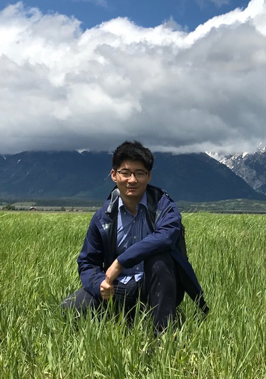

Chang Liu
|
 |

Biography
I am currently a researcher at Microsoft Research Asia, Machine Learning Group, headed by Tao Qin starting from 2019. Before that, I received my Ph.D. degree in 2019 from the TSAIL Group at the Department of Computer Science and Technology of Tsinghua University, supervised by Prof. Jun Zhu. I received my B.Sc. degree in 2014 from the Department of Physics of Tsinghua University. I also visited Prof. Lawrence Carin's group at Duke University from Oct. 2017 to Oct. 2018.
My research interests are primarily on statistical machine learning, especially general Bayesian inference methods (e.g., variational inference and MCMC), their collaboration with manifold structures, and their applications in Bayesian deep learning and large scale learning tasks.
Publications
[Google Scholar] [GitHub] [Semantic Scholar]
-
Invertible Image Rescaling.
Mingqing Xiao, Shuxin Zheng, Chang Liu, Yaolong Wang, Di He, Guolin Ke, Jiang Bian, Zhouchen Lin, and Tie-Yan Liu. European Conference on Computer Vision (ECCV; Oral), 2020.
[Paper & Appendix] <-- [BibTeX] --> -
Variance Reduction and Quasi-Newton for Particle-Based Variational Inference.
Michael H. Zhu, Chang Liu, and Jun Zhu. International Conference on Machine Learning (ICML), 2020.
[Paper] [Appendix] [Slides] -
Understanding MCMC Dynamics as Flows on the Wasserstein Space.
Chang Liu, Jingwei Zhuo, and Jun Zhu. International Conference on Machine Learning (ICML), 2019.
[Paper & Appendix] [Slides] [Poster] [Codes] [BibTeX] -
Understanding and Accelerating Particle-Based Variational Inference.
Chang Liu, Jingwei Zhuo, Pengyu Cheng, Ruiyi Zhang, Jun Zhu, and Lawrence Carin. International Conference on Machine Learning (ICML), 2019.
[Paper & Appendix] [Slides] [Poster] [Codes] [BibTeX] -
Variational Annealing of GANs: A Langevin Perspective.
Chenyang Tao, Shuyang Dai, Liqun Chen, Ke Bai, Junya Chen, Chang Liu, Ruiyi Zhang, Georgiy Bobashev, and Lawrence Carin. International Conference on Machine Learning (ICML), 2019.
[Paper] [Appendix] [BibTeX] -
Straight-Through Estimator as Projected Wasserstein Gradient Flow.
Pengyu Cheng, Chang Liu, Chunyuan Li, Dinghan Shen, Ricardo Henao, and Lawrence Carin. NeurIPS 2018 Bayesian Deep Learning Workshop, 2018.
[Paper] [BibTeX] -
Message Passing Stein Variational Gradient Descent.
Jingwei Zhuo, Chang Liu, Jiaxin Shi, Jun Zhu, Ning Chen, and Bo Zhang. International Conference on Machine Learning (ICML), 2019.
[Paper] [Appendix] [BibTeX] -
Riemannian Stein Variational Gradient Descent for Bayesian Inference.
Chang Liu, and Jun Zhu. AAAI Conference on Artificial Intelligence (AAAI), 2018.
[Paper] [Appendix] [Slides] [Poster] [Codes] [BibTeX] -
Stochastic Gradient Geodesic MCMC Methods.
Chang Liu, Jun Zhu, and Yang Song. Neural Information Processing Systems (NeurIPS), 2016.
[Paper] [Appendix] [Slides] [Poster] [Codes] [BibTeX]
Thesis
-
Doctoral Dissertation: A Study on Efficient Bayesian Inference Methods Using Manifold Structures (in Chinese),
Outstanding Doctoral Dissertation Award of Tsinghua University, supervised by Prof. Jun Zhu, 2019.
Related talk (in English):[Sampling Methods on Manifolds and Their View from Probability Manifolds] - Bachelor Thesis: Maximum Entropy Discrimination Latent Dirichlet Allocation with Determinantal Point Process Prior (in Chinese), supervised by Prof. Jun Zhu, 2014.
Talks
Patents
- 随机梯度测地线马尔可夫链蒙特卡罗方法及装置. 申请人：朱军，刘畅，宋飏. 申请号：201611084360X. 公布号：CN106599909A.
Service & Teaching
| Reviewer: NeurIPS, ICML, UAI, AAAI. |
| Teaching Assistant: Duke-Tsinghua Machine Learning Summer School, Aug. 2016. |
| Teaching Assistant: Advanced Calculus (undergraduate course), instructed by Prof. Yinghua Ai, Sep. 2014 to Jan. 2015. |
Honors & Awards
| Outstanding Ph.D. Graduate, Department of Computer Science and Technology, 2019. |
| Outstanding Doctoral Dissertation, Tsinghua University, 2019. |
| Ronghua Zhang Scholarship, 2013. |
| Sumitomo Corporation Scholarship, 2012. |
| Tsinghua Asia-Pacific President Federation Scholarship, 2011. |
Miscellaneous
- I was a member of Tsinghua University Symphonic Band (THUMB) from 2010 to 2019. I play the trombone. [Our Sound]